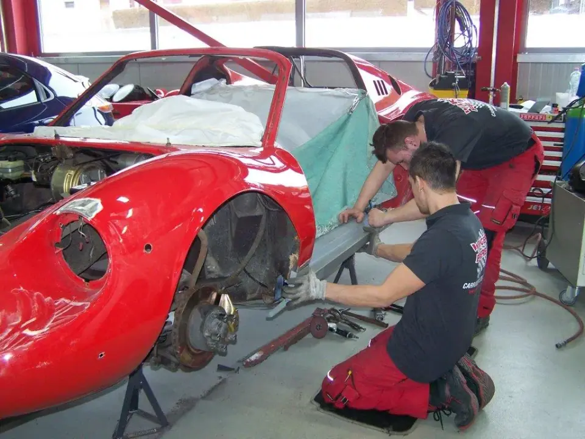
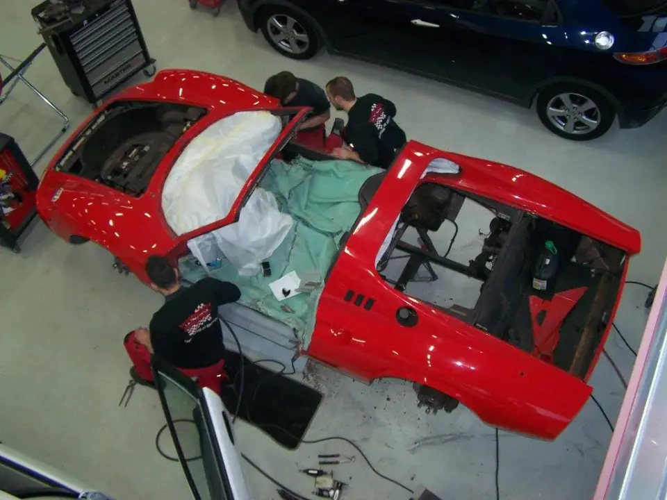
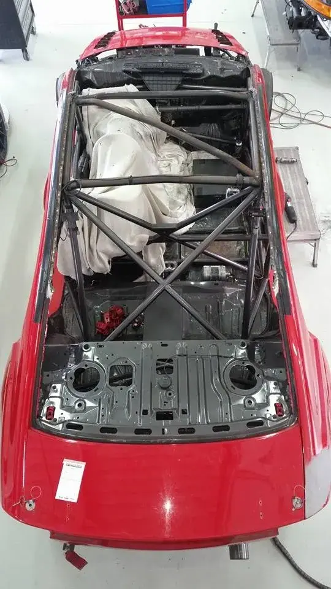
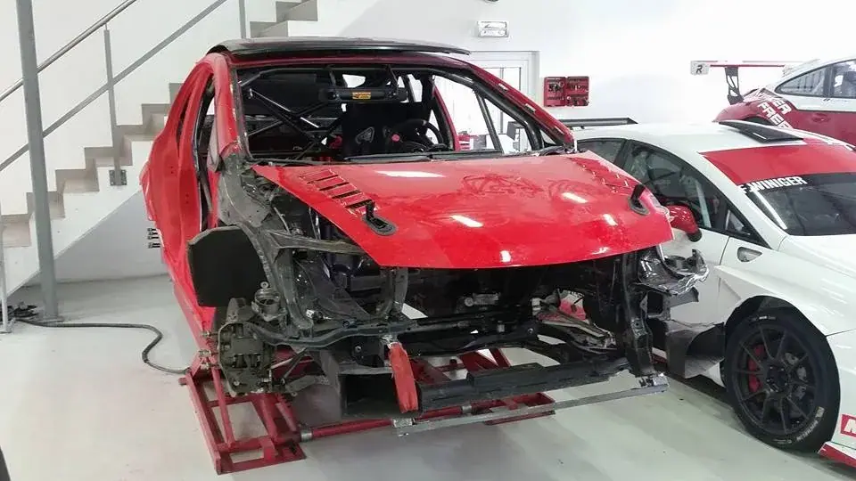
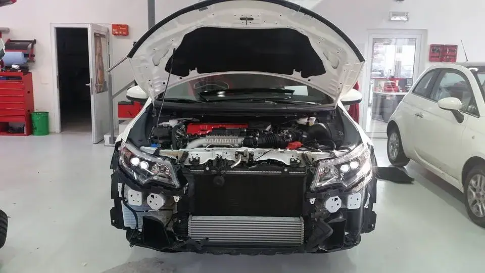
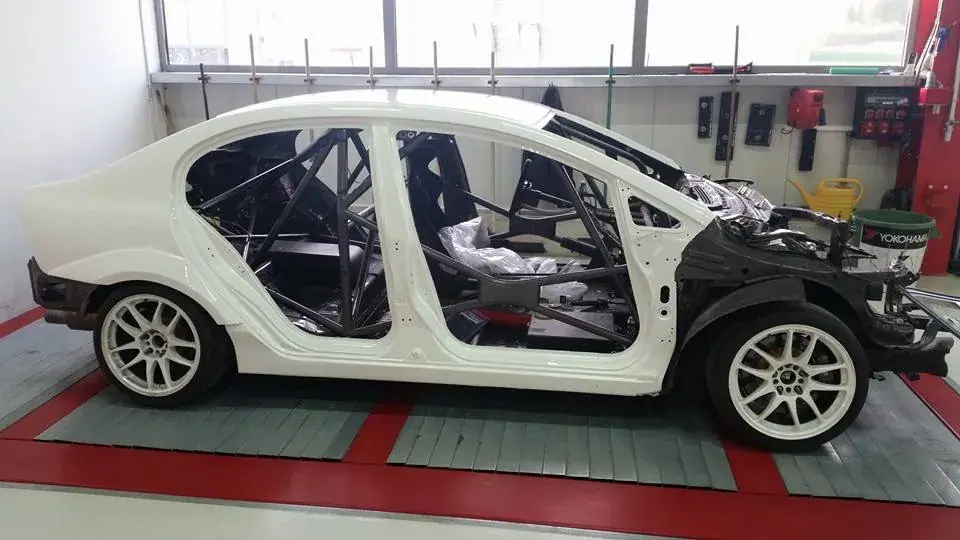
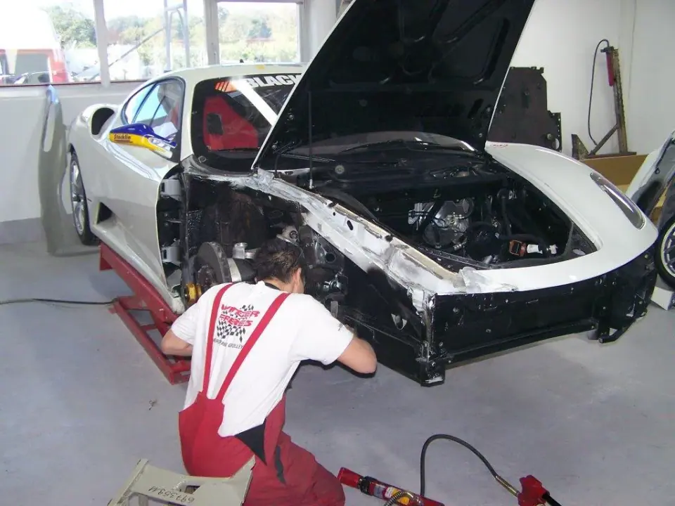
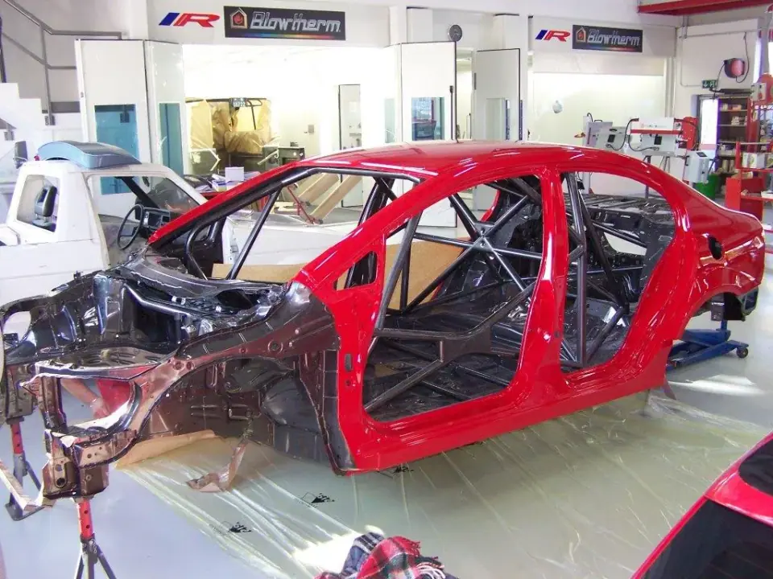

Nos locaux & réalisations
L'atelier
en images.
S1Le bâtiment
Le bâtiment
Route de l'Industrie-Ouest 11, zone industrielle de Grolley. · 10 photos


S2L'accueil
L'accueil
Réception et espace clients. · 03 photos


S3L'atelier
L'atelier
Carrosserie, préparation et peinture. · 08 photos


S4Le gardiennage
Le gardiennage
Le sous-sol chauffé réservé aux véhicules. · 04 photos


S5Réalisations
Réalisations
Travaux en cours à l’atelier : prestige, restauration et compétition. · 12 photos

















Photographies récentes des réalisations, de l'équipe et de la station de lavage à fournir